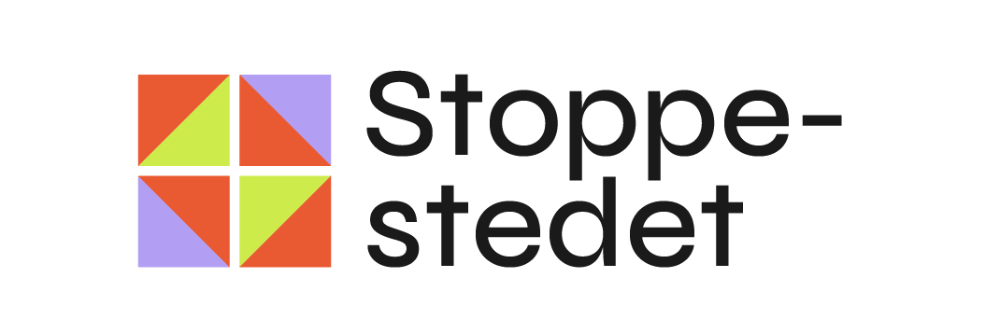
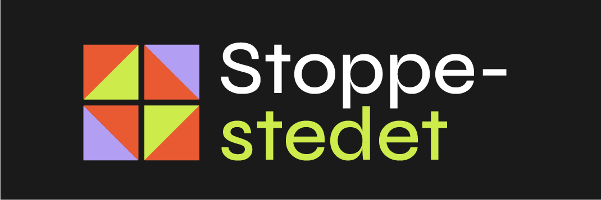
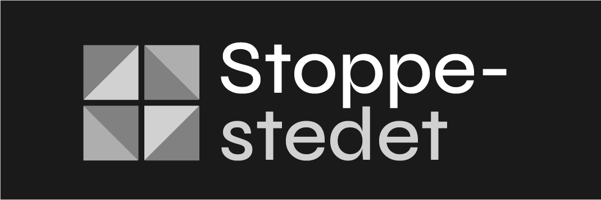
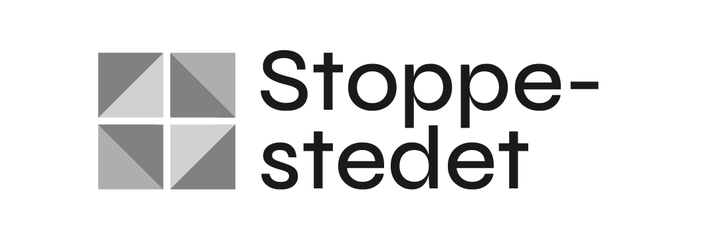
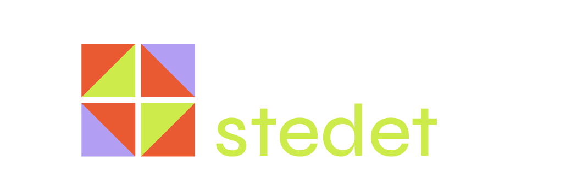
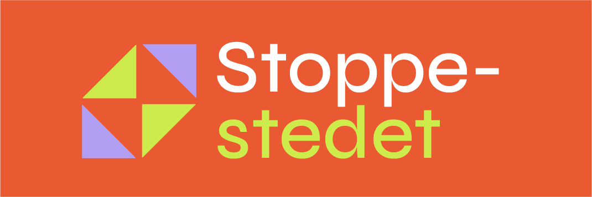
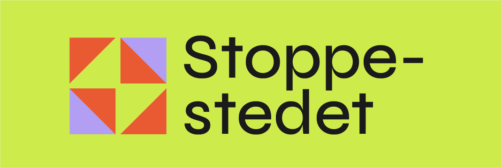
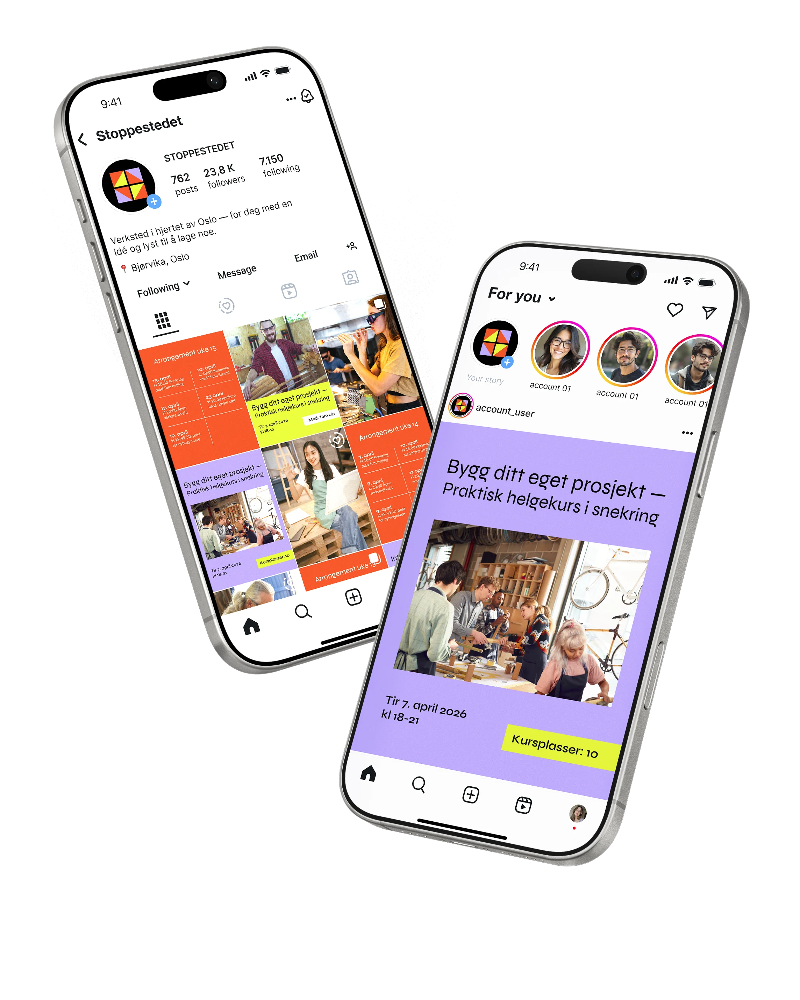
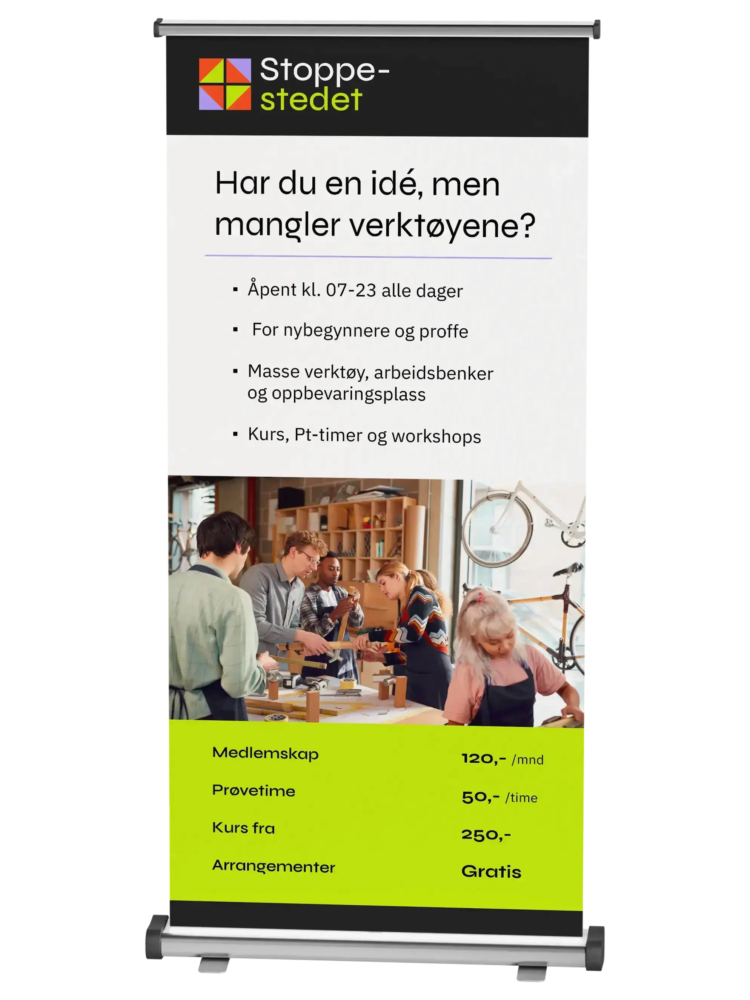
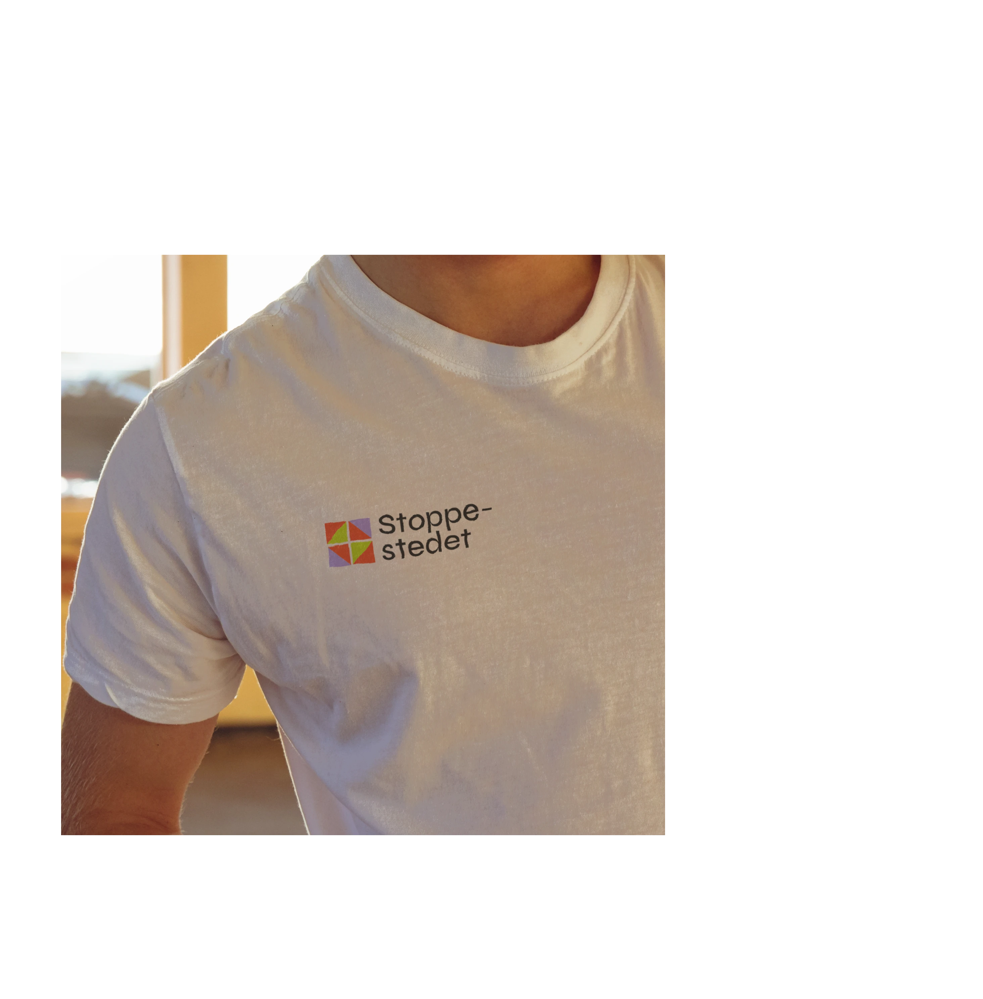

Stoppe-
stedet
Visuell identitet & nettside — Makerspace

Stoppestedet er et (fiktivt) åpent, kreativt verksted i Oslo som gjør det enklere å skape. Her får du tilgang til verktøy, plass og faglig veiledning gjennom prøvetimer, kurs og medlemskap.
Konsept
Stoppestedet er et fiktivt lavterskel makerspace i Oslo, laget for mennesker som er nysgjerrige på å skape noe, men som kanskje ikke har erfaring fra før. Konseptet bygger på idéen om et sted man kan stoppe innom, teste ut verktøy, delta på kurs og møte andre kreative mennesker.
Navnet spiller på et sted man stopper innom underveis, men også på et sted som kan bli starten på en ny idé eller kreativ prosess.
Makerspaces kan ofte oppleves som tekniske og lukkede. Her var ambisjonen å åpne opp, både visuelt og språklig. Designet vektlegger tydelig struktur, enkel navigasjon og en tone som oppmuntrer til deltakelse.
Designmanual







Har du en idé?
Kurs, arrangementer og konkurranser
Bli medlem · Verkstedet · Kalender
Du trenger ikke melde deg på eller ha en grunn til å komme.
Merkevareapplikasjoner
Instagram-profil — gjør stedet mer levende og lettere å se for seg. Viser hvordan merkevaren fungerer i en ekte setting.
Banner (messe/stand) — samler de viktigste nøkkelpunktene og gir et raskt inntrykk av merkevaren.
T-skjorte for ansatte — viderefører merkevarens uttrykk og gjør det enkelt å identifisere hvem som jobber der.
I det endelige uttrykket har jeg brukt gjentakelse av farger, former og enkelte bilder for å skape tydelig gjenkjennelighet på tvers av nettside, trykksaker og sosiale flater.


